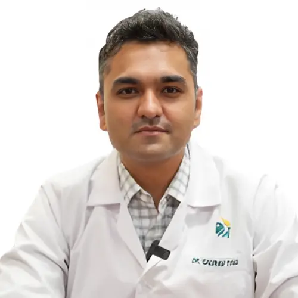

4-noyabr kuni Hindistonning Apollo Hospitals shifoxonasi ZAP-X mutaxassisi Dr. Gaurav Tyagi bilan bepul jonli onlayn muloqot tashkil etiladi.
5 nafar bemor uchun individual konsultatsiya: yuborilgan tibbiy hujjatlar ko'rib chiqiladi va tanlangan bemorlar jonli efirda Dr. Gaurav Tyagi bilan o'z holatini muhokama qiladi.

Bosh miya tekshiruvi natijalari.
Imkon qadar DICOM formatida yoki disk/fayl ko'rinishida. Kontrast bilan o'tkazilgan bo'lsa, shuni ham qo'shing.
Agar o'tkazilgan bo'lsa.
Agar o'sma turi aniqlangan bo'lsa.
Agar avval operatsiya qilingan bo'lsa.
Agar avval davolanish o'tkazilgan bo'lsa.
Ism-familiya, yosh, tashxis (ma'lum bo'lsa), hozirgi shikoyatlar, avvalgi davolash usullari.
⚠️ Faqat shaxsiy tibbiy ma'lumotlarni ommada muhokama qilishga rozilik bildirgan bemorlar hujjatlarini @unimed_travel ga yuborsin.
Operatsiyasiz davolash imkoniyatini bilmoqchimisiz? UniMed Travel Telegram kanalida Dr. Gaurav Tyagi bilan bepul jonli onlayn muloqotga qo'shiling.
Telegram kanalga qo'shilish